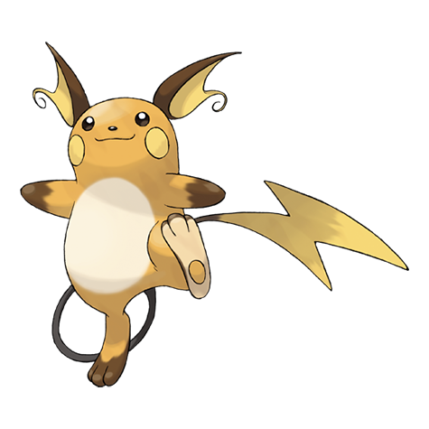

Voltar ao Home
Raichu

Áudio: Raichu falando
Vídeo: pikachu evoluindo para raichu
Informações:
Raichu é um Pokémon do tipo Elétrico que evolui de um Pikachu quando exposto a uma Pedra do Trovão (Thunder Stone). Ele é conhecido por sua v elocidade e poderosos ataques elétricos, como o "Choque do Trovão" (Thunderbolt) e o "Raio" (Thunder). Raichu possui uma cauda longa e fina que pode ser usada como um cabo para conduzir eletricidade. Ele é um Pokémon leal e amigável, mas também pode ser feroz em batalha. Raichu é uma evolução popular de Pikachu, oferecendo aos treinadores uma opção mais poderosa para enfrentar desafios no mundo Pokémon.